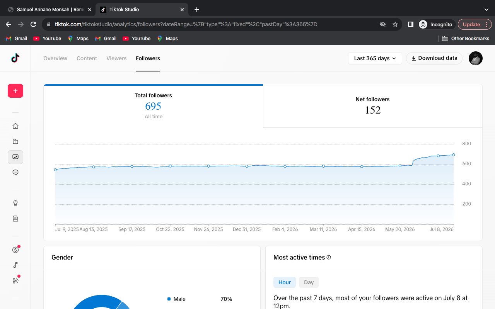
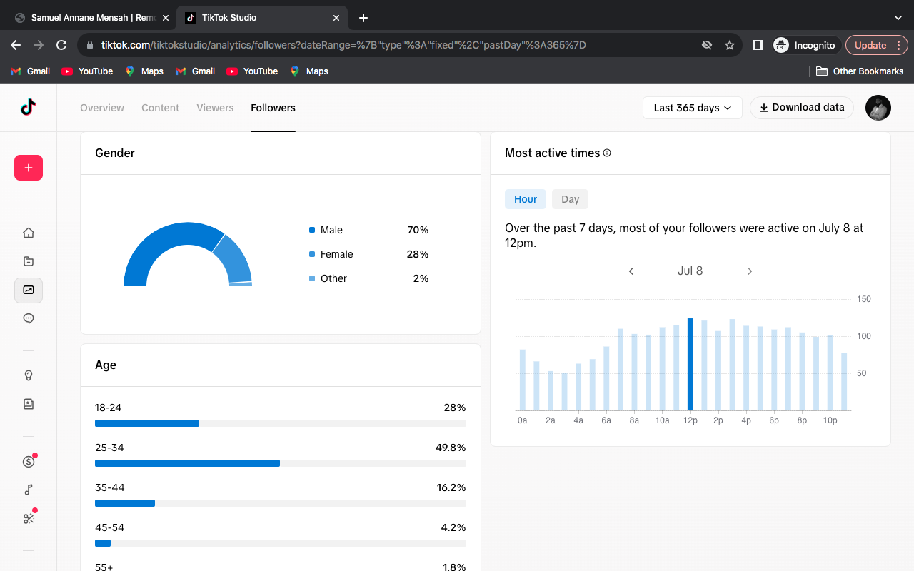
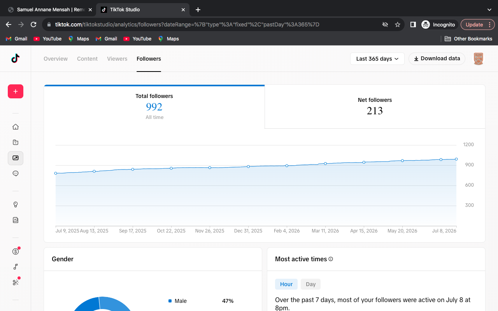

Featured Results
Real growth. Real numbers.
A look at how strategic content execution turns into measurable business results.
TikTok Account Growth: 0 to 694 Followers
The Challenge
Starting completely from zero — no audience, no prior content, no existing brand recognition on the platform.
The Strategy
- Created strong, scroll-stopping hooks for every video
- Built audience-focused content pillars around real pain points
- Optimized future videos based on analytics from top performers
- Designed content specifically to drive comments and engagement
The Results
31.4KTotal Post Views
25KViewers Reached
22KUnique New Viewers
1.1KProfile Views
2KLikes
212Comments
694Followers Built
88.1%Traffic From FYP
Top Performing Content
- "Tech is not for the weak..."11K views
- Graphic Design / Photoshop Trends3.8K views
- Graphic Design Viral Trends2.7K views
- Local Business Strategy Video1.5K views
Screenshots







Lessons Learned
Strong hooks and consistent analytics review were the single biggest drivers of growth — content that underperformed always pointed to the next optimization, and content that overperformed revealed exactly what the audience wanted more of.